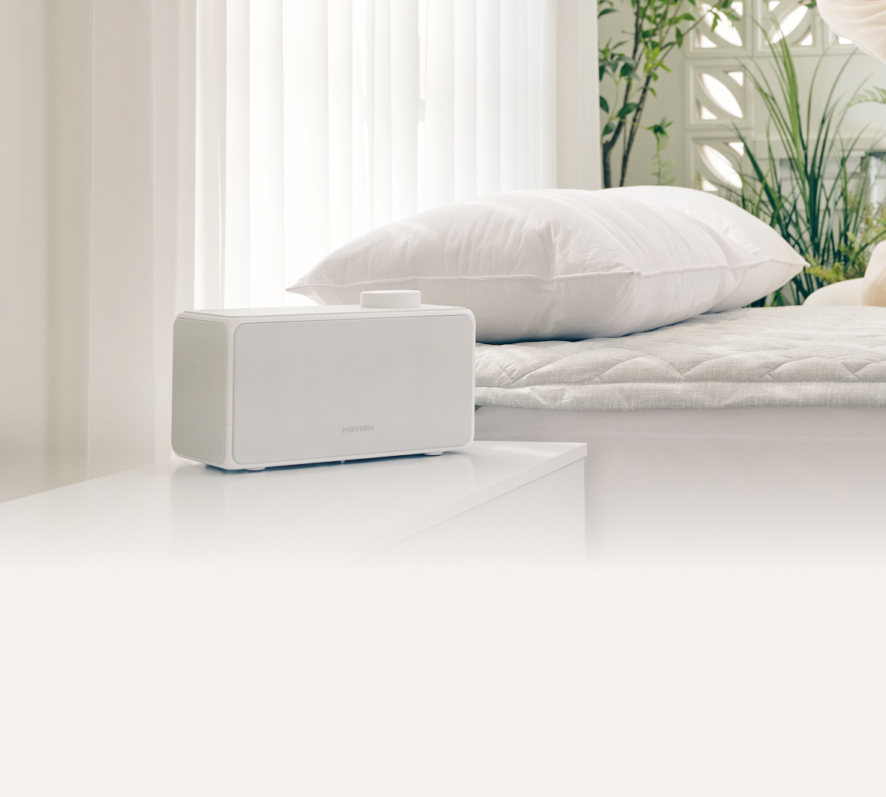
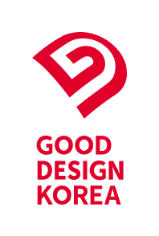
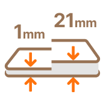
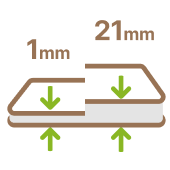
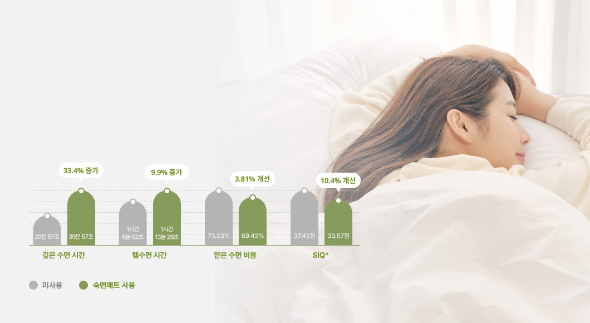
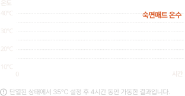
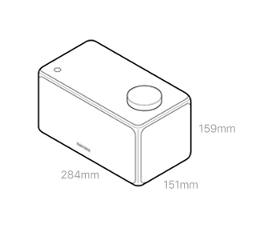

<link rel="stylesheet" href="./css/sleep_2024/style_emw_pc.css">
  
    <article class="prd-detail-wrapper type-emw-520">
  
      <!-- 메인 비주얼 -->
      <div class="prd-main-visual">
        <h2 class="title">
          <span class="prd-desc">대한민국 숙면의 기술</span>
          <strong class="prd-name">나비엔 숙면매트 온수</strong>
          <span class="prd-code">EMW520</span>
        </h2>
        <div class="bg-img">
          
          
          
        </div>
      </div>
      <!-- //메인 비주얼 -->
  
      <!-- 제품 USP 요약 -->
      <div class="prd-main-summary">
        <ul class="summary-list">
          <li>
            <div class="summary-item">
              
              <div class="text">
                기분 좋은 온도로<br>
                좋은 잠을 만드는
                <strong class="keyword">수면 레시피</strong>
              </div>
            </div>
          </li>
          <li>
            <div class="summary-item">
              
              <div class="text">
                자면서 이불 속이<br>
                더워지지 않는<br>
                <strong class="keyword">기분 좋은 포근함</strong>
              </div>
            </div>
          </li>
          <li>
            <div class="summary-item">
              
              <div class="text">
                UV살균으로 걱정 없고<br>
                물 빼기도 버튼 하나로<br>
                <strong class="keyword">손쉬운 물 관리</strong>
              </div>
            </div>
          </li>
          <li>
            <div class="summary-item">
              
              <div class="text">
                취향에 따라<br>
                매트타입을 선택하는
                <strong class="keyword">슬림/쿠션매트</strong>
              </div>
            </div>
          </li>
        </ul>
      </div>
      <!-- //제품 USP 요약 -->
       
      <!-- 수면 레시피 -->
      <div class="prd-section sleep-recipe">
        <div class="section-header">
          <span class="title-label">좋은 잠을 만드는</span>
          <h3 class="section-title">수면 레시피</h3>
        </div>
        <div class="sleep-recipe-information">
          <div class="text-main">
            내가 자는 공간을 기분 좋은 온도로 만들어<br>
            더 오래 잔 듯, 깊은 수면 시간을 늘려줍니다.
          </div>
          <p class="text-sub">
            얕은 수면은 줄이고, 깊은 수면은 늘려 전체 효율이 개선됩니다.<sup><a href="#footnote-1" aria-label="각주 1번">1)</a></sup>
          </p>
          <figure class="sleep-recipe-graph bg-figure">
            
          </figure>
        </div>
        <ul class="text-notice">
          <li>결과는 개인에 따라 차이가 있을 수 있습니다.</li>
          <li>SIQ(Sleep Inertia Questionnaire) 수면 관성 지수로, 잠이 덜 깬 느낌에 대한 주관 설문조사</li>
          <li>효율 및 수치 대한 자세한 내용은 페이지 맨 하단을 참고해주세요 <sup><a href="#footnote-1" aria-label="각주 1번">1)</a></sup></li>
        </ul>
      </div>
      <!-- //수면 레시피 -->
  
      <!-- 기분 좋은 포근함 -->
      <div class="prd-section temperature-control">
        <div class="section-header">
          <span class="title-label">온수가 순환하여 이불 속이 은은하고 따뜻하게 유지되는</span>
          <h3 class="section-title">기분 좋은 포근함</h3>
        </div>
        <div class="temperature-control-information">
          <ul class="temperature-control-points">
            <li>
              <figure class="point-item">
                <figcaption class="figure-text">
                  <strong class="title">설정한 온도를 실시간으로 유지해줘요</strong>
                  <p class="description">
                    보일러에서 나가고 돌아오는 물의 온도를<br>
                    측정하는 듀얼온도센싱으로 정확한 온도를 구현합니다.
                  </p>
                  <p class="description bottom">나의 체온이 더해져도 열이 쌓이지 않습니다.</p>
                </figcaption>
                
                <div class="figure-motion-graph" data-motion-visible="false">
                  
                  <i class="line"></i>
                </div>
                <div class="figure-motion" data-motion-visible="false">
                  <i class="icon icon-mat"><i class="circle"></i></i>
                  <i class="icon icon-water-in"><i class="check"></i></i>
                  <i class="icon icon-water-out"><i class="check"></i></i>
                </div>
              </figure>
            </li>
            <li>
              <figure class="point-item">
                <figcaption class="figure-text">
                  <strong class="title">온도 취향이 달라도 문제 없어요</strong>
                  <p class="description">
                    좌우 분리난방으로 두 사람이 써도 쾌적!<br>
                    0.5℃ 단위까지 맞추어 숙면 가능합니다.
                  </p>
                </figcaption>
                
                <div class="figure-graph" data-motion-visible="false">
                  <div class="graph graph-left">
                    <i class="arrow"></i>
                    <strong class="temp" data-temp-value="33.5">0</strong>
                  </div>
                  <div class="graph graph-right">
                    <i class="arrow"></i>
                    <strong class="temp" data-temp-value="36.5">0</strong>
                  </div>
                  <div class="graph-line">
                    <i class="dot"></i><i class="dot"></i><i class="dot"></i>
                    <i class="dot"></i><i class="dot"></i><i class="dot"></i>
                  </div>
                  <div class="graph-label">온도단계</div>
                </div>
              </figure>
              <ul class="text-notice">
                <li>숙면매트 온수의 온도 설정 범위는 28℃ ~ 45℃ 입니다.</li>
              </ul>
            </li>
          </ul>
        </div>
      </div>
      <!-- //기분 좋은 포근함 -->
  
      <!-- 손쉬운 물 관리 -->
      <div class="prd-section water-management">
        <div class="section-header">
          <span class="title-label">물을 알아서 살균해주고, 필요 시 간편하게 뺄 수도 있는</span>
          <h3 class="section-title">손쉬운 물 관리</h3>
        </div>
        <div class="water-management-information">
          <figure class="water-management-clean">
            <figcaption class="figure-text">
              <strong class="figure-title">알아서 깨끗하게 해주니 안심돼요 <sup><a href="#footnote-2" aria-label="각주 2번">2)</a></sup></strong>
              <p class="description">
                UV살균을 통해 보일러 안에서 순환하는 물의<br>
                미생물과 세균을 제거합니다.
              </p>
              <p class="description">
                정수, 생수, 수돗물 관계 없이 알아서 <br>
                깨끗하게 유지합니다.
              </p>
            </figcaption>
            
          </figure>
          <figure class="water-management-change">
            <figcaption class="figure-text">
              <strong class="figure-title">손쉬운 물 빼기로 관리도 편해요</strong>
              <p class="description">
                전용 키트와 버튼 하나로 보일러와 매트 안의 물을<br>
                자동으로 빼주어 교체 및 관리가 편리합니다.
              </p>
              <span class="license">특허 등록번호 (10-1800839)</span>
            </figcaption>
            
          </figure>
        </div>
      </div>
      <!-- //손쉬운 물 관리 -->
  
      <!-- 매트 타입 -->
      <div class="prd-section two-types-mat">
        <div class="section-header">
          <span class="title-label">내 취향에 따라 선택하는</span>
          <h3 class="section-title">매트 타입</h3>
        </div>
        <div class="slim-type-information">
          <div class="text-main">
            매트리스 느낌 그대로<br>
            <strong>초슬림매트</strong>
          </div>
          <div class="text-sub">
            매트에 호스가 없어서<br>
            있는 듯 없는 듯 배김이 없습니다.
          </div>
          <figure class="slim-type-figure bg-figure">
            
          </figure>
          <ul class="slim-type-point">
            <li>
              <figure class="point-item">
                <figcaption class="title">촘촘한 물길 설계로 매트 전체가 따뜻합니다.</figcaption>
                
              </figure>
            </li>
            <li>
              <figure class="point-item">
                <figcaption class="title">사용하지 않을 때는 작게 접어 보관이 편리합니다.</figcaption>
                
              </figure>
            </li>
          </ul>
        </div>
        <div class="cushion-type-information">
          <div class="text-main">
            어디서든 푹신한<br>
            <strong>쿠션매트</strong>
          </div>
          <div class="text-sub">
            침대 뿐 아니라 바닥 사용도 문제 없습니다.
          </div>
          <figure class="cushion-type-figure bg-figure">
            
          </figure>
          <ul class="cushion-type-point">
            <li>
              <figure class="point-item">
                <figcaption class="title">세심하게 설계한 레이어로 배기지 않고 안락합니다.</figcaption>
                
              </figure>
            </li>
          </ul>
        </div>
        <ul class="text-notice">
          <li>해당 제품은 슬림/쿠션 두 가지 매트타입 중 한 가지 선택이 가능합니다.</li>
        </ul>
      </div>
      <!--// 매트 타입 -->
  
      <!-- 온수 전용 커버 -->
      <div class="prd-section water-mat-cover">
        <div class="section-header">
          <span class="title-label">쾌적한 수면환경을 위한</span>
          <h3 class="section-title">숙면매트 온수 전용 커버</h3>
        </div>
        <div class="water-cover-information">
          <div class="cover-point-main">
            <strong class="title">알러지케어 원단</strong>
            <p class="description">
              진드기와 먼지를 차단하면서도 통기성이<br>
              좋아 관리가 편합니다.
            </p>
            <span class="license">
              공인인증기관 FITI 시험연구원 항진드기 검사 완료<br>
              (N288-23-00040)
            </span>
            <p class="text-point">
              닿는 곳마다 깨끗한 촉감이<br>
              기분 좋은 수면을 만듭니다.
            </p>
            <figure class="cover-figure">
              
              <figcaption class="text-option">애쉬그레이 색상</figcaption>
            </figure>
          </div>
          <ul class="cover-point-list">
            <li>
              <figure class="point-item">
                
                <figcaption class="title">
                  <span class="label">뒤척여도 움직이지 않는</span>
                  고정 밴드
                </figcaption>
              </figure>
            </li>
            <li>
              <figure class="point-item">
                
                <figcaption class="title">
                  <span class="label">매트와 커버를 고정하는</span>
                  스냅 단추
                </figcaption>
              </figure>
            </li>
            <li>
              <figure class="point-item">
                
                <figcaption class="title">
                  <span class="label">설치와 관리가 편한</span>
                  3면 오픈형
                </figcaption>
              </figure>
            </li>
            <li>
              <figure class="point-item">
                
                <figcaption class="title">
                  <span class="label">더욱 안심할 수 있는</span>
                  방수 소재
                </figcaption>
              </figure>
            </li>
          </ul>
        </div>
      </div>
      <!--// 온수 전용 커버 -->
  
      <!-- 다중 안전 시스템 -->
      <div class="prd-section safe-system">
        <div class="section-header">
          <span class="title-label">안심하고 사용할 수 있는</span>
          <h3 class="section-title">다중 안전 시스템</h3>
          <p class="section-description">빈틈없이 설계한 15가지 안전 장치로 걱정 없습니다.</p>
        </div>
        <div class="safe-system-information">
          <ul class="safe-system-list">
            <li>
              <i class="icon high-temperature"></i>
              <span class="name">고온모드 알림기능</span>
            </li>
            <li>
              <i class="icon auto-timer"></i>
              <span class="name">자동정지타이머</span>
            </li>
            <li>
              <i class="icon self-diagnosis"></i>
              <span class="name">자가진단기능</span>
            </li>
            <li>
              <i class="icon lock-mode"></i>
              <span class="name">잠금모드</span>
            </li>
            <li>
              <i class="icon water-leak-alarm"></i>
              <span class="name">누수알림</span>
            </li>
            <li>
              <i class="icon overheating-prevention"></i>
              <span class="name">과열방지 시스템</span>
            </li>
            <li>
              <i class="icon water-level-sensor"></i>
              <span class="name">수위센서</span>
            </li>
            <li>
              <i class="icon connect-guard"></i>
              <span class="name">커넥트 가드</span>
            </li>
            <li>
              <i class="icon heater-malfunction-prevention"></i>
              <span class="name">히터오작동방지</span>
            </li>
            <li>
              <i class="icon freeze-prevention"></i>
              <span class="name">동파방지시스템</span>
            </li>
            <li>
              <i class="icon safe-fuse"></i>
              <span class="name">안전퓨즈</span>
            </li>
            <li>
              <i class="icon movement-sensor"></i>
              <span class="name">동작센서</span>
            </li>
            <li>
              <i class="icon temperature-sensor"></i>
              <span class="name">온도센서</span>
            </li>
            <li>
              <i class="icon fire-prevention"></i>
              <span class="name">화재방지</span>
            </li>
            <li>
              <i class="icon horizontality-sensor"></i>
              <span class="name">수평유지센서</span>
            </li>
          </ul>
        </div>
      </div>
      <!-- //다중 안전 시스템 -->
  
      <!-- 나비엔 서비스 -->
      <div class="info-section navien-service">
        <div class="section-header">
          <span class="title-label">100만 고객이 나비엔을 선택한 이유</span>
          <h3 class="section-title">고객 감동 서비스</h3>
        </div>
        <div class="navien-service-information">
          <div class="text">
            <span class="text-1">더 이상 불량 및 고장에 대한 걱정은 NO!</span>
            <strong class="text-2">
              365일 24시간 언제나<br>
              처음부터 끝까지 고객님과 함께 합니다.
            </strong>
            <span class="text-3">고객센터 1588 - 1144</span>
          </div>
          <span class="warranty"></span>
        </div>
      </div>
      <!-- //나비엔 서비스 -->
  
       <!-- 수상 및 인증 -->
      <div class="info-section product-awards">
        <div class="section-header">
          <h3 class="section-title">수상 및 인증</h3>
        </div>
        <ul class="product-award-list">
          <li>
            <div class="award-item">
              
              <div class="text-main title">
                소비자중심경영수상 7회 연속 인증
              </div>
              <div class="text-sub year">
                2011 ~ 2024
              </div>
            </div>
          </li>
          <li>
            <div class="award-item">
              
              <div class="text-main title">
                프리미엄브랜드지수 9년 연속 1위
              </div>
              <div class="text-sub year">
                2016 ~ 2024
              </div>
            </div>
          </li>
          <li>
            <div class="award-item">
              
              <div class="text-main title">
                한국품질만족지수 9년 연속 1위
              </div>
              <div class="text-sub year">
                2016 ~ 2024
              </div>
            </div>
          </li>
          <li>
            <div class="award-item">
              
              <div class="text-main notice">
                본 제품은 전자기장환경인증(EMF)를 획득해<br>
                전자파로부터의 안전성을 검증받았습니다.
              </div>
              <div class="text-sub source">
                한국기계전자시험연구원
              </div>
            </div>
          </li>
          <li>
            <div class="award-item">
              
              <div class="text-main notice">
                산업통상자원부 선정 본상 수상
              </div>
              <div class="text-sub year">
                2024
              </div>
            </div>
          </li>
        </ul>
      </div>
      <!-- //수상 및 인증 -->
  
      <!-- 제품 스펙 -->
      <div class="info-section product-spec">
        <div class="section-header">
          <h3 class="section-title">제품 스펙</h3>
        </div>
        <div class="spec-size">
          <h4 class="spec-title">제품 사이즈</h4>
          <ul class="size-list">
            <li>
              <strong class="type-name boiler">보일러</strong>
              
            </li>
            <li>
              <strong class="type-name mat">매트</strong>
              
            </li>
            <li>
              <strong class="type-name cover">커버</strong>
              
            </li>
          </ul>
        </div>
        <div class="spec-detail">
          <h4 class="spec-title">제품 상세 스펙</h4>
          <table class="spec-detail-table">
            <caption>제품 상세 스펙 정보가 나와 있는 표</caption>
            <colgroup>
              <col>
              <col width="30%">
              <col width="30%">
              <col width="30%">
            </colgroup>
            <tbody>
              <tr>
                <th scope="row">제품명</th>
                <td colspan="3"><strong class="name">EMW520</strong></td>
              </tr>
              <tr>
                <th scope="row">매트타입</th>
                <td colspan="3">슬림 / 쿠션</td>
              </tr>
              <tr>
              </tr><tr>
                <th scope="row">사이즈 구분</th>
                <td>싱글</td>
                <td>퀸</td>
                <td>킹</td>
              </tr>
              <tr>
                <th scope="row">모델명</th>
                <td>EMW520-SS / EMW520-SH</td>
                <td>EMW520-QS / EMW520-QH</td>
                <td>EMW520-KS / EMW520-KH</td>
              </tr>
              <tr>
                <th scope="row">매트 사이즈 <small>(가로 x 세로, mm)</small></th>
                <td>1000 x 1950</td>
                <td>1450 x 1950</td>
                <td>1650 x 1950</td>
              </tr>
              <tr>
                <th scope="row">커버 사이즈 <small>(가로 x 세로, mm)</small></th>
                <td>1100 x 2050</td>
                <td>1550 x 2050</td>
                <td>1750 x 2050</td>
              </tr>
              <tr>
                <th scope="row">보일러 사이즈 <small>(가로 x 세로 x 높이, mm)</small></th>
                <td colspan="3">284 x 151 x 158</td>
              </tr>
              <tr>
                <th scope="row">보일러 무게 <small>(kg)</small></th>
                <td colspan="3">2.65</td>
              </tr>
              <tr>
                <th scope="row">물탱크 용량 <small>(mL)</small></th>
                <td colspan="3">700</td>
              </tr>
              <tr>
                <th scope="row">정격소비전력</th>
                <td colspan="3">AC 220V, 60Hz, 350W</td>
              </tr>
              <tr>
                <th scope="row">구동 방식</th>
                <td colspan="3">모터 순환 방식 (BLDC 모터 적용)</td>
              </tr>
              <tr>
                <th scope="row">품질 보증 기준</th>
                <td colspan="3">3년 무상 품질 보증</td>
              </tr>
              <tr>
                <th scope="row">
                  
                  KC 인증 필 유무
                </th>
                <td colspan="3">
                  <span class="code">
                    YH07111-20001<br>
                    R-R-kdn-EMW720-KS
                  </span>
                </td>
              </tr>
              <tr>
                <th scope="row">AS책임자와 전화번호</th>
                <td colspan="3">경동나비엔 서비스센터 / 1588 - 1144</td>
              </tr>
              <tr>
                <th scope="row">동일모델의 출시년월</th>
                <td colspan="3">2024년 9월</td>
              </tr>
              <tr>
                <th scope="row">제조자 / 제조국</th>
                <td colspan="3">주식회사 경동나비엔 / 대한민국</td>
              </tr>
            </tbody>
          </table>
  
          <ul class="text-notice">
            <li>매트/커버 사이즈는 제품마다 차이가 있을 수 있습니다. (제품 사이즈 ± 30mm)</li>
            <li>매트/커버 색상은 제품마다 차이가 있을 수 있습니다.</li>
            <li>보일러 사이즈는 제품마다 차이가 있을 수 있습니다.</li>
          </ul>
        </div>
      </div>
      <!-- //제품 스펙 -->
       
      <!-- 공통 -->
      <div class="info-section">
        <!-- 안내사항 -->
        <div class="common-notice">
          <h4 class="title">공통 안내사항</h4>
          <ul class="text-notice">
            <li>위의 이미지는 소비자의 이해를 돕기위해 연출된 이미지이며 광고적 표현이 포함되어 실제 제품과 차이가 있을 수 있습니다.</li>
            <li>제품외관, 스펙 등은 사전 예고 없이 변경될 수 있습니다.</li>
            <li>제품 색상은 모니터 해상도, 밝기 설정 등 컴퓨터 사양에 따라 실제 제품과 차이가 날 수 있습니다.</li>
            <li>해당 제품의 성능은 실 시용 환경에 따라 다를 수 있습니다.</li>
          </ul>
        </div>
        <!-- //안내사항 -->
  
        <!-- 각주 -->
        <div class="footnote">
          <ul class="footnote-list unfolded">
            <li class="footnote-item">
              <span class="footnote-anchor" id="footnote-1"></span>
              <span class="index-num">1)</span>
              <dl class="item-detail">
                <dt class="colon">연구과제</dt>
                <dd>수면 단계에 따른 적절한 매트 온도 제공이 수면 품질에 미치는 영향</dd>
                <dt class="colon">지원 기관</dt>
                <dd>경동나비엔</dd>
                <dt class="colon">실시기관</dt>
                <dd>에이슬립</dd>
                <dt class="colon">수행기관</dt>
                <dd>클리오닉 의원</dd>
                <dt class="colon">연구 기간</dt>
                <dd>2023.12~2024.06</dd>
                <dt class="colon">대상자</dt>
                <dd>수면장애가 없는 20~50대 건강한 남녀 50명</dd>
                <dt class="colon">실험 방법</dt>
                <dd>숙면매트 온수/카본의 사용 조건에 따라 그룹을 나누어 수면다원검사 수행 및 분석</dd>
                <dt class="colon">실험 조건</dt>
                <dd class="sub-list">
                  <ul>
                    <li>- 총 3번에 걸쳐 정해진 취침시간 내 개별 패턴대로 수면 및 기상하였음</li>
                    <li>- 숙면매트 설정 온도: 33℃ / 실내온도: 18~20℃ / 실내습도: 50-55%</li>
                    <li>- SIQ(수면관성)와 같은 주관적 설문조사를 진행하였음</li>
                  </ul>
                </dd>
                <dt class="colon">실험 결과</dt>
                <dd>전체 수면지표를 비롯한 입면, 각성, 수면 단계별 시간 및 비율에서 통계적으로 유의미한 개선효과를 보였음.</dd>
              </dl>
            </li>
            <li class="footnote-item">
              <span class="footnote-anchor" id="footnote-2"></span>
              <span class="index-num">2)</span>
              <dl class="item-detail">
                <dt class="colon">시험기관</dt>
                <dd>한국화학융합시험연구원(KTR)</dd>
                <dt>시험 방법</dt>
                <dd class="sub-list">
                  <ul>
                    <li>- 초기 세균수가 (1.0-9.9) X 10^4 CFU/ mL이 되도록 오염수를 준비</li>
                    <li>- 오염수 (0.7~ 0.8) L를 온수매트에 주입하여 6시간 가동 후 생균 수 측정</li>
                    <li>- 4종류 시험진행 (28°C 대장균/ 포도상구균) (45°C 대장균/ 포도상구균)</li>
                  </ul>
                </dd>
                <dt>결과</dt>
                <dd class="sub-list">
                  <ul>
                    <li>- 28°C 온도 설정 대장균: 대조군 5.1 X 10^4 CFU/ mL에서 시험군 &lt;10 CFU/mL로 관찰됨. 포도상구균: 대조군 6.4 X 10^4 CFU/ mL에서 시험군 &lt;10 CFU/mL로 관찰됨.</li>
                    <li>- 45°C 온도 설정 대장균: 대조군 5.8 X 10^4 CFU/ mL에서 시험군 &lt;10 CFU/mL로 관찰됨. 포도상구균: 대조군 5.6 X 10^4 CFU/ mL에서 시험군 &lt;10 CFU/mL로 관찰됨.</li>
                  </ul>
                </dd>
                <dt class="colon">결론</dt>
                <dd>4종류 시험 모두 대조 군(초기)대비 99.9% 이상 살균됨을 확인.</dd>
                <dd class="sub-list">
                  <ul>
                    <li>* 실험실 측정 수치로 실생활 조건에서는 달라질 수 있음.</li>
                  </ul>
                </dd>
              </dl>
            </li>
          </ul>
        </div>
        <!-- //각주 -->
      </div>
      <!-- //공통 -->
  
    </article>
  
  <script>
    const motions = document.querySelectorAll('*[data-motion-visible="false"]');
    const GAP = 10;
  
    const countMotion = (target) => {
      const targetValue = parseFloat(target.dataset.tempValue);
      const ADD_VALUE = 1.2,
            COUNT_DELAY = 50;
      let countInterval = '',
          val = 0;
      countInterval = setInterval(() => {
        val = val + ADD_VALUE;
        if (val >= targetValue) {
          target.innerHTML = targetValue;
          clearInterval(countInterval);
        } else {
          target.innerHTML = val.toFixed(1);
        }
      }, COUNT_DELAY);
    };
  
    if (motions) {
      window.addEventListener('scroll', () => {
        motions.forEach(motion => {
          const motionBottom = motion.getBoundingClientRect().bottom;
          if (motionBottom <= window.innerHeight + GAP && motionBottom >= GAP) {
            if (motion.dataset.motionVisible != 'true') {
              motion.dataset.motionVisible = 'true';
              if (motion.querySelectorAll('*[data-temp-value]')) {
                motion.querySelectorAll('*[data-temp-value]').forEach(el => {
                  countMotion(el);
                });
              }
            }
          } else {
            if (motion.dataset.motionVisible === 'true') {
              motion.dataset.motionVisible = 'false';
            }
          }
        });
      });
    }
  </script>